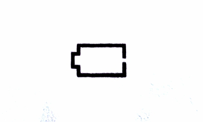

Table of Contents
Introduction
- 1.1 Content/Product Includes
- 1.2 Monitor and Arm Cuff
- 1.3 Display and Symbols
- 1.4 Classification of BP(Blood Pressure)
- 2.1 Installing Batteries
- 2.2 Setting the Date and Time
- 2.3 Blood Pressure Measurement Tips
- 2.4 Applying the Arm Cuff
- 2.5 Sitting Correctly
- 2.6 Steeling a User ID
- 3.1 Taking a Measurement
- 4.1 Pairing your Monitor with a Smart Device
- 4.2 Taking a Measurement
- 4.3 Disabling/Enabling Bluetooth
- 5.1 Viewing the Reading Stored in Memory
- 5.2 Viewing the Average Reading
- 6.1 Deleting All Reading Stored in Memory
- 6.2 Restoring Your Monitor to the Default Settings
- 8.1 Maintenance
- 8.2 Storage
- 8.3 Cleaning
- 8.4 Disposal
- Using the AC Adapter (Optional accessory)
1. Know Your Monitor
2. Preparation
3. Using Your Monitor Without a Smart Device
4. Using Your Monitor with a Smart Device
5. Using Memory Function
6. Other Settings
7. Error Messages and Troubleshooting
8. Maintenance
9. Optional Accessories
10. Specifications
11. FCC Statement
12. Limited Warranty
13. Guidance and Manufacturer's Declaration
Introduction
Thank you for purchasing the OMRON BP7350 Blood Pressure Monitor. This monitor can be used by multiple users. This blood pressure monitor uses the oscillometric method of blood movement through your brachial artery and converts the movements into a digital reading.Safety Instructions
This instructions manual provide you with important information about the OMRON BP7350 Blood Pressure Monitor. To ensure the safe and proper use of this monitor, READ and UNDERSTAND all of these instructions. If you do not understand these instructions or have any questions, contact 1-800-634-4350 before attempting to use this monitor For specific information about your own blood pressure, consult with your physician.Intended Use
This device is a digital monitor intended for use in measuring blood pressure and pulse rate in adult patient population. The device detects the appearance or irregular heartbeats during measurement and gives a warning signal with readings.Environments of Use: Home
Patient Population: Adult
Receiving and Inspection
Remove this monitor and other components from the packaging and inspect for damage. If this monitor or any other components is damaged, DO NOT USE and contact 1-800-634-4350.Symbols Glossary
For symbol information, visit: OmronHealthcare.com/symbols_glossaryContraindications
Important Safety Information
Read the Important Safety Information in this instruction manual before using this monitor. Follow this instruction manual thoroughly for your safety. Keep for future reference. For specific information about your own blood pressure, CONSULT WITH YOUR PHYSICIAN.⚠️ Warning indicate a potentially hazardous situation which, if not avoided, could result in death or serious injury.
Data Transmission
AC Adapter(optional accessory) Handling and Usage
Battery Handling and Usage
⚠️ Caution indicates a potentially hazardous situation which, if not avoided, may result in monitor or moderate injury to the user or patient, or cause damage to the equipment or other property.
Data Transmission
AC Adapter (optional accessory) Handling and Usage
DO NOT break it.
DO NOT tamper with it.
Do NOT forcibly bend or pull it.
DO NOT twist it.
DO NOT use it if it is gathered in bundle.
DO NOT pinch it.
DO NOT place it under heavy objects.
Battery Handling and Usage
1. Know Your Monitor
1.1 Contents/Product Includes
Monitor, Easy Wrap ComFit Cuff, 4 "AA" batteries, instruction manual, quick start guide1.2 Monitor and Arm Cuff
Front of the monitor
Left and right side of the monitor

Back and bottom of the monitor

Arm cuff

(Upper arm circumference: 9" - 17"(22-42 cm))
1.3 Display and Symbols
| A. | AVG | Average value symbolFlashes when viewing the average of the latest 2 or 3 readings taken withen the most resent ten minutes timeframe. |
| B. | üìùMEMORY | Memory symbolAppears When viewing readings stored in the memory. |
| C. | Systolic blood pressure reading |
|
| D. | Comparison display |
Display past readings. Refear to section 5 for more information. |
| E. | Pulse Display/Memory number |
Pulse rate appears after the measurement. When pressing the üìù button, the memory number appears for approximately 1.5 seconds before the pulse rate appears on the display. |
| F. | Diastolic blood pressure reading |
|
| G. |

|
Heartbeat symbolFlashes while taking a measurement |
| H. |
|
Deflation symbol |
| I. |

|
User ID symbolThe user ID number appears when selecting the user with [user ID selection] switch. |
| J. | 

|
Bluetooth ON symbolAppears when your reading are being transferred.Bluetooth OFF symbolAppears when Bluetooth is disabled. |
| K. | 
|
Sync symbolFlashes/appears when your data need to be transferred because the store memory is either almost, or completely full. Once you pair your monitor with your smart device, transfer your readings immediately before the monitor delete the oldest reading. Up to 60 readings can be stored in the internal memory or your monitor per user. |
| L. |

|
Low battery symbolFlashes when batteries are low.Depleted battery symbolAppears when batteries are depleted. |
| M. | Date/Time display |
|
| N. |
|
High symbolAppears if your systolic blood pressure is greater or equal to 130mmHg or the diastolic blood pressure is greater or equal to 80mmHg. Refer to sub-section 1.4 for more information. |
| O. | OK symbolFlashes when your monitor is connected to your smart device or readings are transferred successfully |
|
| P. | Movement error symbolAppears with your reading when your body is moving during a measurement. If it appears, remove the arm cuff and waite for 2 to 3 minutes. Then, reapply the cuff, remain still and take another measurements. |
|
| Q. | 

|
Irregular heartbeat symbolAppears when irregular rhythm is detected 2 or more time during a measurement. The symbol with the number appears as bellow: Irregular heartbeat is detected 2 times:üñ§üñ§Irregular heartbeat is detected 3 or more:üñ§üñ§üñ§ A irregular heartbeat rhythm is defined as a rhythm that is 25% less or 25% more than the average rhythm detected while your monitor is measuring blood pressure. irregular heartbeat -^--^-^--^---^--^- Normal heartbeat -^--^--^--^--^- Irregular heartbeat symbol may be displayed when the monitor detect arm movements. Refer to section 7 for more information. If it continues to appear, we recommend you to consult with and follow the directions of your physician. |
| R. | Pulse displayPulse rate appears after the measurement. |
1.4 Classification of BP (Blood Pressure)
ACC/AHA 2017 Hypertension guidelines define categories of BP in adults as below
Categories of BP in adults'
BP Category |
Systolic BP |
Diastolic BP |
Normal |
<120mmHg | <80mmHg |
Elevated |
120-129mmHg | <80mmHg |
Hypertension
|
130-139mmHg >/=140mmHg |
or 80 to 89mmHg >/=90mmHg |